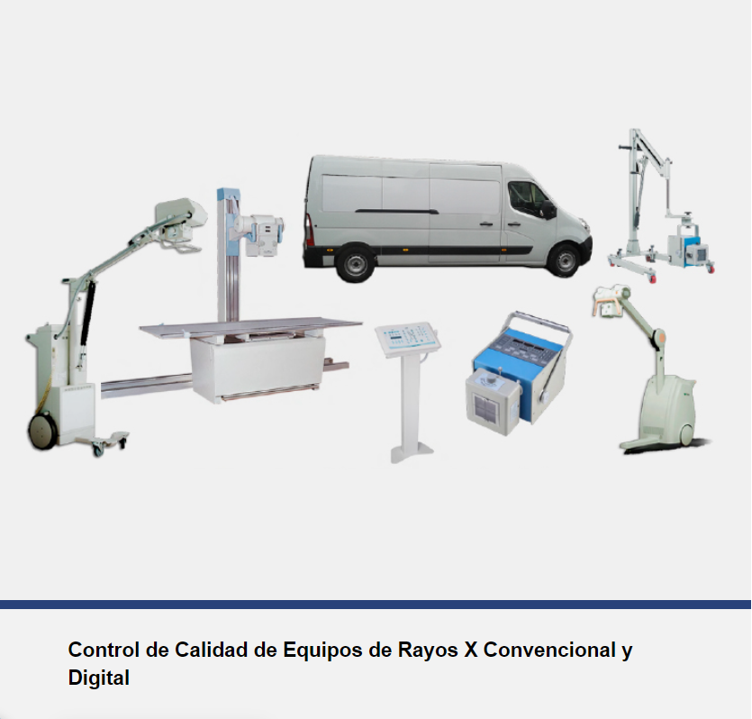
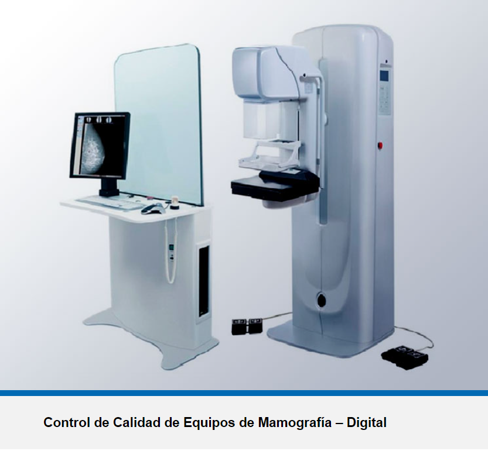

|
EMPRESA COMPROMETIDA CON LA SEGURIDAD RADIOLÓGICA, PIONEROS EN SERVICIOS DE DOSIMETRÍA PERSONAL CON MAS DE 40 AÑOS DE EXPERIENCIA Somos una empresa dedicada al servicio de los Centros de Salud y Personal Asistencial en el ámbito de la Seguridad y Protección Radiologica de los equipos emisores de Radiaciones Ionizantes como son los Equipos de Rayos X Medico, Dental, Teleterapia, Braquiterapia y Medicina Nuclear. |
|---|

Tiene como objetivo dar cumplimiento a la normativa nacional que establece que toda persona que por sus actividades laborales está expuesta a radiaciones ionizantes (POE) debe contar con un dispositivo (dosímetro personal) que le permita conocer la dosis que recibe como consecuencia de las actividades asignadas y que estas dosis se mantengan tan bajas como sea posible y siempre por abajo del límite anual establecido en la misma normativa.
Descarga nuestra "ficha técnica"
Esta dosimetría tiene como objetivo conocer las dosis que las personas expuestas a radiaciones ionizantes (POE) reciben en cualquiera de sus extremidades básicamente manos, como es el caso de POE laborando en servicios de Braquiterapia, Medicina Nuclear, rayos X (intervencionismo y algunas aplicaciones industriales.
|  |  | |
RAYOS X |
MONOGRAFIA |
ARCO EN C |